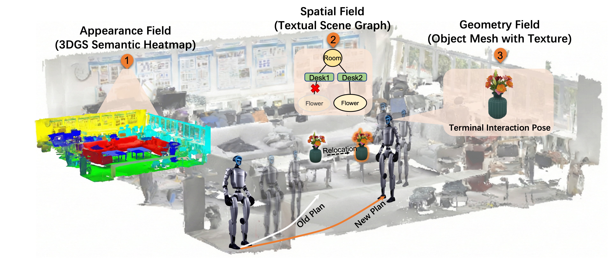
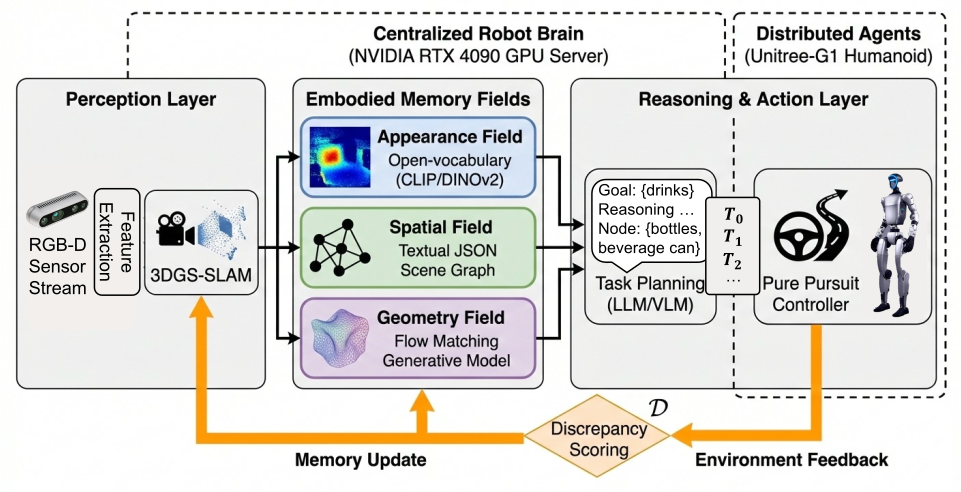
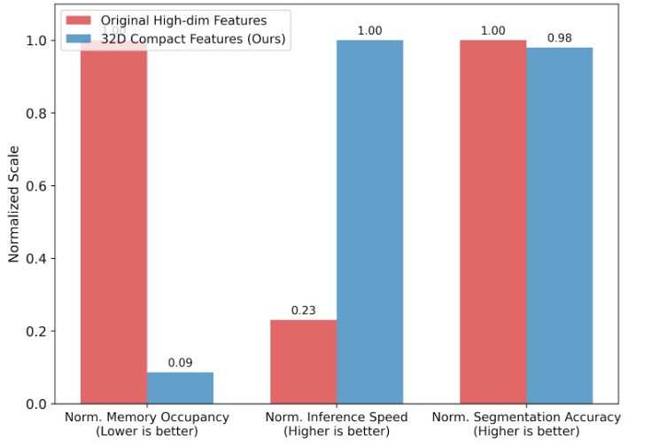
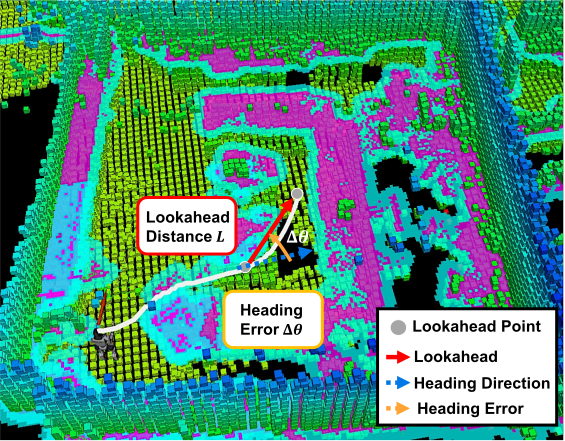

Main System Demo
Unitree G1 executes language-conditioned navigation, detects scene changes, updates memory, and verifies IPS.
Robotics: Science and Systems
1State Key Laboratory of General Artificial Intelligence, Peking University, Shenzhen Graduate School
2Oxford Robotics Institute, University of Oxford
3Institute for Machine Learning, Department of Computer Science, ETH Zurich

Video
Add your final RSS demonstration videos under docs/assets/videos/. The page is already wired for
a main demo and optional adaptation or interaction clips.
Unitree G1 executes language-conditioned navigation, detects scene changes, updates memory, and verifies IPS.
assets/videos/adaptation.mp4: dynamic scene graph update after object relocation.assets/videos/interaction.mp4: mesh recovery and interaction-pose safety verification.Abstract
Safe manipulation-oriented navigation for humanoid robots requires scene memory that remains reliable under locomotion-induced perceptual distortion, environmental changes, and interaction-level geometric safety constraints. MIF integrates confidence-aware semantic 3D Gaussian Splatting, discrepancy-triggered spatial memory updates, and task-driven geometric reconstruction in a closed-loop perception-adaptation pipeline. On a Unitree G1 humanoid in a real dynamic office, MIF improves relocation success from 12% to 94% compared with static scene-graph memory, while reducing semantic memory footprint by 91.4%.
Method
MIF treats scene memory as a locally revisable system representation, grounding language queries into spatial memory and interaction-ready geometry.

Builds a confidence-aware semantic 3DGS representation and suppresses gait-corrupted primitives during rendering and graph construction.
Maintains topological scene memory and triggers local updates when persistent multi-modal discrepancies indicate relocated, removed, or newly introduced objects.
Recovers object-centric meshes on demand and verifies terminal humanoid poses through interaction-pose safety checks.
Results
The full ROS1 system runs on a centralized RTX 4090 workstation and communicates with a Unitree G1 humanoid during navigation and interaction trials.




Gallery
Supplementary qualitative figures are shown as compact panels so large source images do not dominate the page.

Real-world Unitree G1 patrol, navigation, replanning, and object retrieval sequences.

Object meshes generated by the Geometry Field.

Continuous watertight geometry exposes collision constraints missed by sparse centroids.

Denoised mapping quality and appearance-field memory update.
Citation
@inproceedings{jiang2026mif,
title={Learning to Evolve: Multi-modal Interactive Fields for Robust Humanoid Navigation in Dynamic Environments},
author={Jiang, Peifeng and Liu, Hong and Wang, Wenshuai and Jin, Jin and Li, Xia},
booktitle={Robotics: Science and Systems},
year={2026}
}